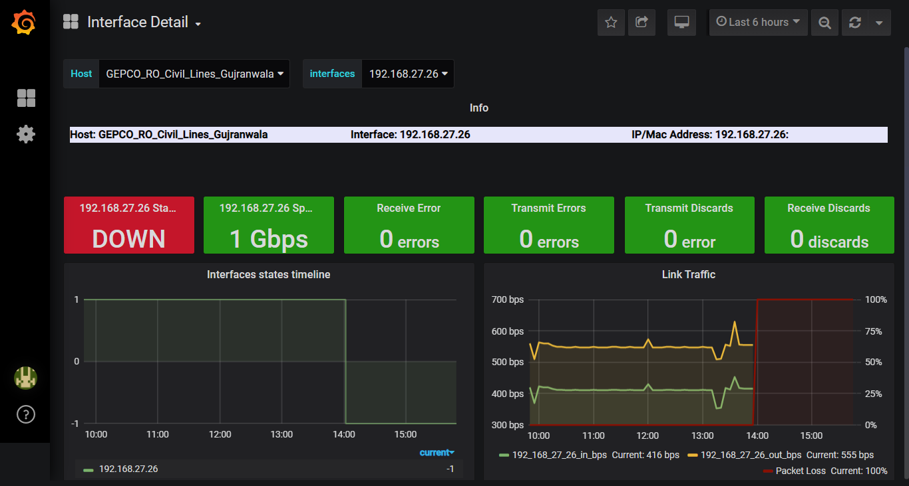

Visualization¶
Visualization navigation tab has been added to redirect to dashboards through web portal

Dashboard¶
Following Dashboards has been added into NMS
i. Summary 360¶
Summary 360 dashboard will display the following information:
Host Status : Down and Up status for sites in graphical representation
Link Traffic In : Trends
Link Traffic Out : Trends
Network Devices : List of all available network devices
ii. Site Details¶
On Summary 360 dashboard, in Network Devices panel, Clicking any available Node Name will leads you to Site Details dashboard.
Site Details dashboard will display the following information :
Filters :
Device Info
Link Utilization
Uptime
Host Availability
CPU Trend
Last CPU Utilization(%)
Interface Info
Response Time
iii. Interface Details¶
On Site Details dashboard, in Interface Info panel, Clicking any available Interface will leads you to Interface Detail dashboard.
Interface Detail dashboard will display the following information :
Filters :
Info
Site Status
Site Speed
Recieve Error
Transmit Errors
Transmit Discards
Recieve Discards
Interface states timeline
Link Traffic
iv. GEPCO-MPLS-Network Top 10¶
On Summary 360 dashboard, clicking Top 10 Networks will leads you to GEPCO-MPLS-Network Top 10 dashboard.
GEPCO-MPLS-Network Top 10 dashboard will display the following information :
Network filter
Top interfaces summary by Traffic IN
Top interface summary by Traffic out
Top Interfaces By percent Utlization
Top Nodes By Response Time
Top Nodes By Memory Utlization
Top Nodes By Average CPU load